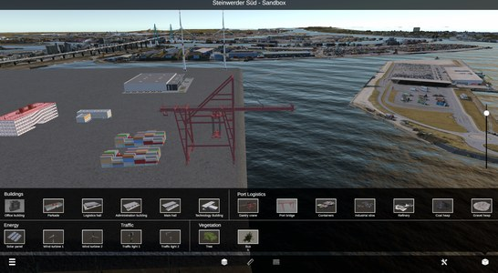
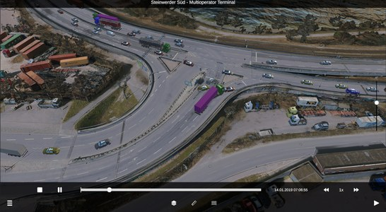
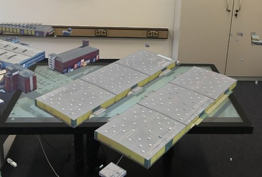
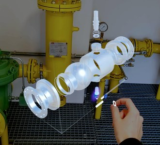
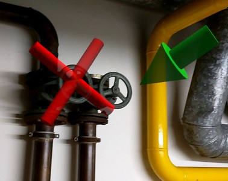
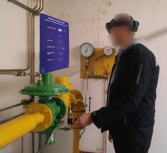
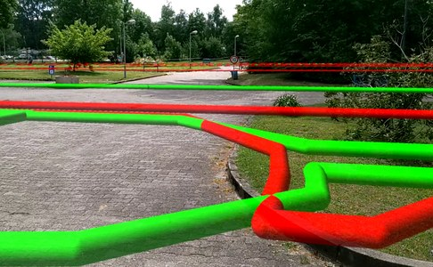
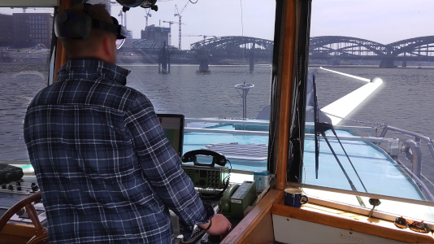
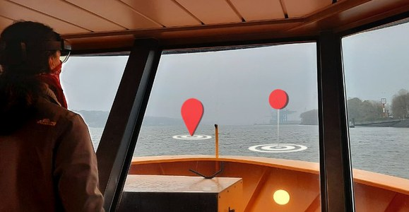
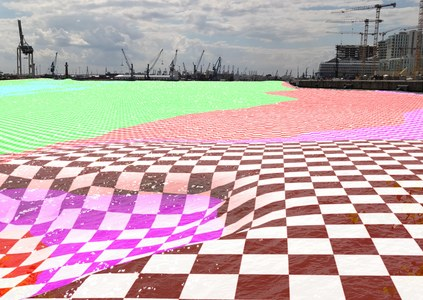

Forscherin und Entwicklerin für Mensch-Computer-Interaktion
Task Assistance Beyond the Screen
Ich erforsche, wie Augmented Reality (AR) uns unterstützen kann, indem sie die reale und die virtuelle Welt verbindet. Ich arbeite mit Endnutzer:innen zusammen, vom ersten Workshop bis zum Test im Feld.
Ich bin wissenschaftliche Mitarbeiterin in der Arbeitsgruppe Human-Computer Interaction der Universität Hamburg. Ich habe meine Dissertation eingereicht, die Disputation ist für November 2026 geplant. Mich interessiert, wie uns Technologie bei der Interaktion mit der realen Welt unterstützen kann. Mein besonderes Interesse gilt AR und immersiven Technologien im Allgemeinen.
Ich entwerfe Konzepte gemeinsam mit den Menschen, die sie nutzen, entwickle Anwendungen für den Einsatz in der realen Welt und untersuche ihre Wirksamkeit und wahrgenommene Nützlichkeit in Labor- und Feldstudien.
Forschungsprojekte
Während meiner Promotion an der Universität Hamburg war ich an mehreren Forschungsprojekten, überwiegend drittmittelfinanziert und eines im Auftrag der Industrie, in enger Zusammenarbeit mit Industrie- und Forschungspartnern beteiligt. Ein Schwerpunkt war zu untersuchen, wie AR Fachkräfte der Infrastruktur in Planung und Wartung unterstützen kann.
A toolset for hyper-realistic and XR-based human-human and human-machine interactions
Entwicklung von Technologien für überzeugendere Präsenz in Extended Reality (XR), gegliedert in drei technische Säulen mit jeweils einem SDK: Holoportation, Haptik und intelligente virtuelle Menschen.
Strategische Hafenplanung auf Basis von digitalen Zwillingen
Die Entwicklung eines Hafenmasterplanungstools auf Basis eines digitalen Zwillings, das kollaborative Planung und Simulation von Verkehrsszenarien ermöglicht. Als technische Plattform haben wir einen Multi-Touch-Tisch in Kombination mit AR untersucht.



Rolle
Entwicklung des Hafenmasterplanungstools (3D-Visualisierung und Interaktion)
Dynamische Lageerstellung und Unterstützung für Rettungskräfte in komplexen Krisensituationen
Erstellung eines dynamischen Lagebilds von Krisen- und Katastrophensituationen aus fortlaufend eingebundenen Echtzeitdaten, das Rettungskräften umfassende Orientierung und Situationsbewertung ermöglicht. Wir haben untersucht, wie sich die beteiligten Organisationen in ihrer Zusammenarbeit unterstützen lassen, darunter Polizei, Feuerwehr und Hafenbehörde.
Auftragsforschung für Hamburger Energienetze über HITeC Hamburg
AR-Unterstützung bei der Inspektion von Gasdruckregelanlagen
Untersuchung, wie AR Techniker bei der Inspektion von Anlagen des örtlichen Gasnetzbetreibers unterstützen kann. Gemeinsam mit Beteiligten, vor allem technischem Personal, haben wir in einem nutzerzentrierten Prozess Anforderungen ermittelt und einen Prototyp entwickelt, mit Anwendungsfällen wie der 3D-Visualisierung verbauter Komponenten, digitalen Formularen in AR und der Darstellung unterirdischer Leitungen.




Rolle
Analyse der Anforderungen der Techniker
Entwicklung von Prototypen in einem iterativen Prozess
Durchführung einer Langzeit-Feldstudie zur Evaluation des finalen Prototyps
Wissensvernetzung und Kollaboration durch die Anwendung erweiterter Realität in produktionsnahen Dienstleistungen
Entwicklung eines Digitalisierungsassistenten, der AR/VR für kleine und mittlere Unternehmen (KMU) besser zugänglich macht, indem er die Entwicklung von AR/VR-Anwendungen mit einem No-Code/Low-Code-Ansatz unterstützt. Ein zentraler Anwendungsfall war der Einsatz von AR für die maritime Navigation im Hamburger Hafen.



Rolle
Erforschung von Visualisierungs- und Interaktionsparadigmen
Vorlesung und Übung im Rahmen der Ringvorlesung „User Interface Software and Technology“
Sommersemester 2024
Interaktive Multimediasysteme
Übungen
Wintersemester 2022/23
Usability Engineering & User Experience Design
Übungen
Betreute Abschlussarbeiten (Bachelor und Master)
2026
From Planning to Reconciliation: Reducing Articulation Work in Shared Households through Contestable AI
2026
Progressive Disclosure of Concept Maps Beyond Conversational-Agent Guidance: A VR Instructional Approach for Cabin Safety and Emergency Procedures
2026
A Digital Companion for a Surf Competition: User-Centered Development of an Event App for the Adh Open
2025
User Interactions on Multi-Touch Surfaces: Effects of Adjustable Tilt and Height
2025
Comparing UX Design Trends (Flat Design vs. Skeuomorphism) and Interaction Methods (Natural vs. Universal) in Office-Themed Augmented Reality Environments
2025
Die Kunst der Platzierung: Evaluierung einer Taxonomie für die Anordnung von Benutzeroberflächen-Elementen in einem kombinierten Touchtisch-Augmented-Reality-Setting
2025
Potenzielle Einsetzbarkeit von Augmented Reality in der Straßen- und VerkehrsplanungAls Paper veröffentlicht →
2025
Augmented Reality based Soil Moisture Visualization for Optimized Irrigation Decision on Sport FieldsAls Paper veröffentlicht →
2025
Mold vs. Draw: Comparison and Evaluation of two Terrain Design Techniques in Augmented Reality
2024
Investigation of the Effects of Technical Parameters in Augmented Reality in the Context of Data VisualizationAls Paper veröffentlicht →
2024
Evaluating the Effectiveness of Combined Nudging Techniques in E-Commerce: A Focus on Scarcity, Social Proof, and Salience Nudges
2023
Einfluss auf die wahrgenommene Selbstoffenbarung, Vertrauen und Sympathie in einer Video-CMC basierten Online-Dating Umgebung
2023
Der Einfluss der Art der sozialen Interaktion auf die Motivation unter Berücksichtigung des Geschlechts im Kontext einer gamifizierten Lernapp
2023
Nutzerzentrierte Entwicklung einer Augmented Reality Trainingsanwendung für den Fußballsport
2022
Die Relevanz von Design Guidelines auf die Usability von Theater- und Museumswebsites
2022
Skeuomorphismus vs. Flat Design vs. Neumorphismus. Ein Vergleich der User Experience hinsichtlich altersbedingter Unterschiede
Werdegang
2020 – 2026
Universität Hamburg, Arbeitsgruppe Human-Computer Interaction
Wissenschaftliche Mitarbeiterin und Doktorandin
Dissertation: „Task Assistance Beyond the Screen – Investigating Augmented Reality to Support Infrastructure Professionals in Planning and Maintenance Contexts“. Betreuer: Prof. Dr. Frank Steinicke
2018 – 2020
Fraunhofer Center für Maritime Logistik und Dienstleistungen
Wissenschaftliche Hilfskraft
Entwicklung eines XR-Teleoperation-Interfaces zur Fernsteuerung von Schleppern im Forschungsprojekt FernSAMS.
2017 – 2018
Universität Hamburg
Wissenschaftliche Hilfskraft
Entwicklung von Augucation, einer Plattform für interaktive Anwendungen zur Ergänzung von Vorlesungsinhalten.
2016 – 2020
Universität Hamburg
M.Sc. Informatik
2013 – 2016
Universität Hamburg
B.Sc. Mensch-Computer-Interaktion
Kontakt
Ich suche eine Anstellung in der angewandten Forschung und Entwicklung, insbesondere in den Bereichen Mensch-Computer-Interaktion, XR, industrielle und infrastrukturelle XR sowie Visualisierung. Am schnellsten erreichen Sie mich per E-Mail.